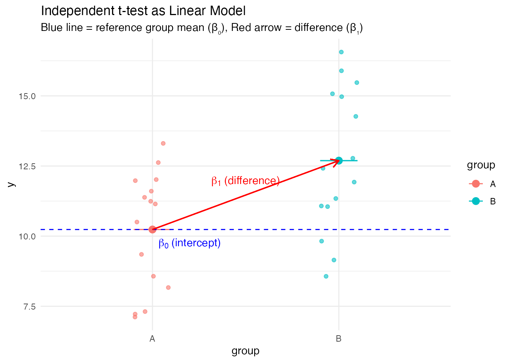

| Test | Linear Model Formula | What’s being tested |
|---|---|---|
| Correlation | y ~ x | Slope coefficient |
| One-sample t-test | y ~ 1 | Intercept |
| Independent t-test | y ~ group | Group coefficient |
| Paired t-test | diff ~ 1 | Intercept of differences |
| One-way ANOVA | y ~ group | Group coefficients |
| Two-way ANOVA | y ~ factorA * factorB | Main effects & interaction |
| Multiple regression | y ~ x1 + x2 + … | Multiple coefficients |
Common Statistical Tests as Linear Models
The Unified Language of Statistics
Adapted from:
- Common statistical tests are linear models. Jonas Kristoffer Lindeløv (2019).
In this section, we’ll explore an elegant insight: most common statistical tests can be expressed as special cases of the general linear model. This unified framework simplifies our understanding of statistics and reveals deep connections between seemingly different tests.
This section draws extensively from Jonas Lindeløv’s excellent resource which demonstrates how common statistical tests can be expressed as linear models. This approach provides a powerful unifying framework that can transform how we teach and learn statistics.
The key insight is that tests like t-tests, ANOVA, correlation, and others aren’t separate, unrelated techniques, but rather special cases of the same underlying model. By understanding this connection, students can develop a more coherent and transferable understanding of statistics.
The Simplicity Underlying Common Tests
Most statistical tests are special cases of linear models or very close approximations:
y_i = \beta_0 + \beta_1 x_{1i} + \beta_2 x_{2i} + ... + \varepsilon_i
This unified view simplifies learning and shows connections between seemingly different methods.
Teaching linear models first, then presenting traditional tests as special cases:
- Emphasizes understanding over memorization
- Makes statistical concepts more intuitive
- Shows the common structure of different statistical procedures
Linear models provide a unifying framework for understanding statistics. Most common statistical procedures (t-tests, ANOVA, correlation, etc.) are special cases of the general linear model.
This approach simplifies what students need to learn. Instead of treating each test as an independent entity with its own formulas and assumptions, we can present them as variations on the same underlying model.
By teaching the general linear model first and then showing how traditional tests are special cases, we help students build a more coherent mental model of statistics. This approach emphasizes conceptual understanding over rote memorization of formulas and procedures.
A Family Tree of Statistical Tests

This cheat sheet shows how different statistical tests relate to each other through the linear model framework:
- Simple tests at the bottom (t-tests, correlation)
- More complex models at the top (ANOVA, multiple regression)
- Each branch represents a variation or special case of the linear model
This cheat sheet from Lindeløv’s website shows how various statistical tests are related through the linear model framework. It provides a visual roadmap of the connections between different statistical procedures.
Notice how we can trace the path from simple tests like t-tests up to more complex procedures like factorial ANOVA. Each branch represents a variation or extension of the basic linear model.
This visualization helps students see that what they’re learning aren’t disconnected techniques but rather members of the same family, with shared properties and interpretations. This perspective can make learning statistics more coherent and less overwhelming.
Simplifying Our Understanding: Summary Table
The table shows:
- Each common test has a corresponding linear model formulation
- Many tests are testing coefficients in the same type of model
- The differences often come down to which coefficients we’re interested in
This table summarizes how different common tests map to linear model formulations. For each test, we can identify what linear model would be equivalent and which coefficient(s) we’re testing.
Notice that the difference between tests often comes down to:
- What variables we include in the model
- Which coefficient(s) we’re interested in testing
- How we interpret the results
This unified framework helps students see that they’re not learning completely different procedures for each test, but rather applying the same underlying model in different contexts.
Pearson and Spearman Correlation as Linear Models
Model: y = \beta_0 + \beta_1 x \quad where \mathcal{H}_0: \beta_1 = 0
This is simply a linear regression with one predictor. When we test whether the correlation is significant, we’re testing whether the slope (\beta_1) differs from zero.
Code
# Create example data
set.seed(42)
x <- rnorm(50)
y <- 0.6 * x + rnorm(50, 0, 0.8)
data <- data.frame(x = x, y = y)
# Traditional correlation
cor_result <- cor.test(data$x, data$y)
cor_result$estimate cor
0.5818111 Code
cor_result$p.value[1] 9.360699e-06When we standardize both variables (giving them mean=0 and sd=1), the slope coefficient equals the correlation coefficient!
Here we demonstrate that Pearson’s correlation is equivalent to the standardized regression coefficient in a simple linear regression model.
The mathematical model is exactly the same as simple linear regression: y = β₀ + β₁x + ε. The null hypothesis being tested is that β₁ = 0, which means there is no linear relationship between the variables.
When we standardize both x and y (to have mean=0 and sd=1), the slope coefficient in a linear regression equals the correlation coefficient r. This makes intuitive sense because standardization puts both variables on the same scale, making their relationship directly comparable.
The t-test on this coefficient tests exactly the same hypothesis as the correlation test: is there a linear relationship between the variables? The p-values are identical between the two approaches.
This equivalence helps us understand correlation not as a mysterious measure, but simply as the slope of a regression line when variables are standardized.
Pearson vs. Spearman Correlation
Spearman correlation is Pearson correlation on rank-transformed variables:
Code
# Pearson correlation on original data
cor(x, y, method = "pearson")[1] 0.5818111Code
# Spearman correlation = Pearson on ranks
cor(x, y, method = "spearman")[1] 0.6436975[1] 0.6436975Code
[1] 0.6436975The “non-parametric” Spearman correlation is simply the “parametric” Pearson correlation applied to ranked data!
Spearman’s rank correlation is a brilliant example of how a “non-parametric” test is simply a parametric test applied to transformed data.
Instead of correlating the original values, Spearman correlation first converts all values to their ranks (1st, 2nd, 3rd, etc.) and then applies the Pearson correlation formula to these ranks.
This transformation accomplishes two things:
- It makes the test robust to outliers, since extreme values just become the highest or lowest rank
- It allows the test to detect monotonic but non-linear relationships, since ranking linearizes any monotonic relationship
By understanding Spearman correlation as “Pearson on ranks,” we demystify non-parametric statistics. Many so-called non-parametric tests are simply parametric tests applied to transformed data, making them more accessible conceptually.
The R code demonstrates that Spearman correlation can be obtained either by using the dedicated function or by manually ranking the variables and then applying Pearson correlation.
Correlation Visualized
Code
p1 <- ggplot(data, aes(x = x, y = y)) +
geom_point() +
geom_smooth(method = "lm", se = FALSE, color = "blue") +
labs(title = "Pearson: Original Values") +
theme_minimal()
rank_data <- data.frame(x_rank = rank(x), y_rank = rank(y))
p2 <- ggplot(rank_data, aes(x = x_rank, y = y_rank)) +
geom_point() +
geom_smooth(method = "lm", se = FALSE, color = "red") +
labs(title = "Spearman: Ranked Values") +
theme_minimal()
p1 + p2
Left: Pearson correlation fits a line to the original data points
Right: Spearman correlation fits a line to the ranked data points
This visualization helps us understand the relationship between Pearson and Spearman correlation.
The left panel shows the original data with the regression line (Pearson’s r). The right panel shows the same data after converting to ranks, with its regression line (Spearman’s rho).
Notice how the ranked data (right panel) tends to form a more linear pattern. This is because ranking removes the influence of outliers and transforms any monotonic relationship into a linear one.
Another key insight: the slope of the line through the ranked data is the Spearman correlation coefficient, just as the slope of the line through the standardized original data is the Pearson correlation coefficient.
This visualization reinforces the idea that many statistical tests are simply variations on the same theme, applied to differently transformed data.
One-Sample t-test as a Linear Model
Model: y = \beta_0 \quad where \mathcal{H}_0: \beta_0 = 0
This is the simplest linear model possible! It has only an intercept (no predictors), and the intercept equals the sample mean.
Estimate Std. Error t value Pr(>|t|)
(Intercept) 5.105792 0.3582218 14.25316 1.244655e-14Code
confint(lm_one) 2.5 % 97.5 %
(Intercept) 4.373147 5.838438The intercept-only model gives identical results to the one-sample t-test! The coefficient is the mean, and the t-statistic tests if it differs from zero.
The one-sample t-test is perhaps the simplest demonstration of how standard statistical tests are special cases of linear models.
In a one-sample t-test, we’re asking whether a sample mean differs significantly from a hypothesized population value (often zero). In the linear model framework, this becomes an intercept-only model: y = β₀ + ε.
The intercept (β₀) represents the sample mean. The t-statistic tests whether this mean differs significantly from the hypothesized value (in this case, μ=5).
The R code demonstrates this equivalence beautifully. The estimate from t.test() is identical to the intercept from lm(), and the t-statistic, p-value, and confidence intervals match exactly.
This shows how even the most basic statistical test can be understood within the general linear model framework. The intercept-only model is simply a special case where we have no predictors, just as the one-sample t-test is examining a single mean without comparison groups.
Wilcoxon Signed-Rank Test as a Linear Model
The Wilcoxon signed-rank test is approximately a one-sample t-test on signed ranks:
Code
# Traditional Wilcoxon test
w_test <- wilcox.test(y_one - 5) # Test against μ=5
w_test$p.value[1] 0.8552717Code
[1] 0.8488961The “non-parametric” Wilcoxon test can be viewed as a one-sample t-test on rank-transformed data!
The Wilcoxon signed-rank test is often presented as a completely different “non-parametric” alternative to the t-test, but here we see it’s closely related to the t-test when viewed through the linear model lens.
The key insight is that the Wilcoxon test can be approximated as a one-sample t-test applied to signed ranks rather than the original values. Here’s how it works:
- First, we calculate the differences from the hypothesized median (μ=5)
- Then we rank the absolute differences (ignoring signs)
- Finally, we reattach the original signs to these ranks (creating “signed ranks”)
- We run a one-sample t-test on these signed ranks
This transformation makes the test more robust to outliers and non-normal distributions, as extreme values are “tamed” by the ranking process.
The approximation works best with sample sizes of 15 or more. With smaller samples, the discrete nature of ranks means the p-values won’t match exactly, but the approach still provides conceptual insight.
This demonstrates again how “non-parametric” tests can often be understood as parametric tests applied to transformed data, demystifying what might otherwise seem like a completely different approach to inference.
Independent Samples t-test as a Linear Model
Model: y_i = \beta_0 + \beta_1 x_i \quad where \mathcal{H}_0: \beta_1 = 0
Here, x_i is a dummy variable (0/1) for group membership. \beta_0 represents the mean of the first group, while \beta_1 represents the difference between groups.
Code
# Create data for two groups
set.seed(456)
group <- rep(c("A", "B"), each = 15)
y_ind <- c(
rnorm(15, mean = 10, sd = 2),
rnorm(15, mean = 12, sd = 2)
)
ind_data <- data.frame(y = y_ind, group = factor(group))
# Traditional t-test
t_test_ind <- t.test(y ~ group, data = ind_data, var.equal = TRUE)
t_test_ind$statistic t
-2.87084 Code
t_test_ind$p.value[1] 0.007712189Code
Estimate Std. Error t value Pr(>|t|)
(Intercept) 10.236098 0.6046277 16.92959 3.052810e-16
groupB 2.454777 0.8550727 2.87084 7.712189e-03The coefficient for groupB is the difference between groups, exactly what’s tested in the t-test. The t-statistic and p-value are identical!
The independent samples t-test compares means between two groups. In the linear model framework, this is represented as a model with one dummy-coded categorical predictor.
The model is y = β₀ + β₁x + ε, where x is coded as 0 for the first group and 1 for the second group. This dummy coding has a straightforward interpretation:
- β₀ (the intercept) represents the mean of the reference group (group A)
- β₁ represents the difference in means between groups B and A
- The t-statistic tests whether this difference is significantly different from zero
The R code demonstrates that the t-statistic and p-value from the traditional t-test are identical to those for the group coefficient in the linear model.
This demonstrates how categorical variables can be incorporated into linear models through dummy coding, and how tests that might seem conceptually different (like t-tests and regression) are actually part of the same unified framework.
Dummy Coding Visualized
Code
# Plot with jittered points and means
ggplot(ind_data, aes(x = group, y = y, color = group)) +
geom_jitter(width = 0.1, alpha = 0.6) +
stat_summary(fun = mean, geom = "point", size = 3) +
stat_summary(fun = mean, geom = "errorbar",
aes(ymax = ..y.., ymin = ..y..), width = 0.2) +
geom_hline(yintercept = coef(lm_ind)[1], linetype = "dashed", color = "blue") +
geom_segment(x = 1, xend = 2,
y = coef(lm_ind)[1], yend = coef(lm_ind)[1] + coef(lm_ind)[2],
color = "red", arrow = arrow(length = unit(0.3, "cm"))) +
annotate("text", x = 1.2, y = coef(lm_ind)[1] - 0.5,
label = expression(beta[0]~"(intercept)"), color = "blue") +
annotate("text", x = 1.5, y = coef(lm_ind)[1] + coef(lm_ind)[2]/2 + 0.5,
label = expression(beta[1]~"(difference)"), color = "red") +
theme_minimal() +
labs(title = "Independent t-test as Linear Model",
subtitle = "Blue line = reference group mean (β₀), Red arrow = difference (β₁)")
This visualization shows:
- The blue dashed line is the mean of group A (the intercept, \beta_0)
- The red arrow shows the difference between groups (the slope, \beta_1)
- In a t-test, we’re testing whether this difference (\beta_1) is significantly different from zero
This visualization helps us understand how dummy coding works in a linear model with a categorical predictor.
When we use dummy coding in a linear model:
- One group (here, group A) becomes the reference category and is coded as 0
- The other group (group B) is coded as 1
- The intercept (β₀) represents the mean of the reference group
- The coefficient for the dummy variable (β₁) represents the difference between groups
In the plot, the blue dashed line shows the mean of group A (the intercept, β₀). The red arrow represents the difference between groups, which is the coefficient β₁.
This visualization makes it clear that an independent samples t-test is testing whether this difference (β₁) is significantly different from zero. If there’s no difference between groups, the red arrow would be flat (no vertical component).
Understanding dummy coding is crucial for interpreting linear models with categorical predictors. This same principle extends to models with multiple categorical predictors (like ANOVA) and to more complex designs.
Mann-Whitney U Test as a Linear Model
The Mann-Whitney U test is approximately a t-test on ranks:
Code
# Traditional Mann-Whitney U test
mw_test <- wilcox.test(y ~ group, data = ind_data)
mw_test$p.value[1] 0.02635404Code
[1] 0.0236538Code
| Test | P_value | Difference | |
|---|---|---|---|
| Mann-Whitney U | 0.0264 | NA | |
| groupB | Linear model on ranks | 0.0237 | 7.1333 |
Just like with Spearman correlation, the “non-parametric” Mann-Whitney test can be viewed as a regular t-test applied to ranked data.
The Mann-Whitney U test (also known as the Wilcoxon rank-sum test) is commonly presented as a “non-parametric” alternative to the independent samples t-test when data violates normality assumptions.
However, as we can see, it can be closely approximated as a standard t-test (or linear model) applied to ranked data:
- First, we rank all values across both groups from lowest to highest
- Then we run a standard t-test (or linear model) comparing these ranks between groups
- The coefficient for the group effect represents the difference in mean ranks
The p-value from this ranked linear model closely approximates the p-value from the Mann-Whitney U test. This approximation improves with larger sample sizes (n > 20 per group).
This approach gives us an additional benefit: while the traditional Mann-Whitney U test only provides a p-value, the linear model on ranks also gives us the actual difference in mean ranks between groups, providing a measure of effect size.
This further reinforces the pattern we’ve seen: many “non-parametric” tests can be understood as parametric tests applied to rank-transformed data, providing a unified conceptual framework.
Paired Samples t-test as a Linear Model
Model: y_{2i} - y_{1i} = \beta_0 \quad where \mathcal{H}_0: \beta_0 = 0
A paired t-test simplifies to a one-sample t-test on the differences between pairs!
Code
# Create paired data
set.seed(789)
pre <- rnorm(20, mean = 100, sd = 15)
post <- pre + rnorm(20, mean = 8, sd = 10) # Correlated with pre
paired_data <- data.frame(
subject = 1:20,
pre = pre,
post = post
)
# Traditional paired t-test
t_test_paired <- t.test(paired_data$post, paired_data$pre, paired = TRUE)
t_test_paired$statistic t
3.189437 Code
t_test_paired$p.value[1] 0.004827114Code
Estimate Std. Error t value Pr(>|t|)
(Intercept) 5.089399 1.595704 3.189437 0.004827114The paired t-test becomes an intercept-only model (one-sample t-test) on the differences!
The paired samples t-test is another example of how complex-seeming statistical tests reduce to simpler linear models when we understand the underlying structure.
In a paired design, we have two measurements for each subject (e.g., before and after treatment). The paired t-test accounts for the correlation between these measurements by analyzing the differences rather than the raw values.
The key insight is that a paired t-test is mathematically equivalent to a one-sample t-test on the differences:
- Calculate the difference for each pair: diff = post - pre
- Test whether the mean difference is significantly different from zero using a one-sample t-test
In the linear model framework, this becomes an intercept-only model on the differences: diff = β₀ + ε, where the null hypothesis is β₀ = 0.
The R code demonstrates this equivalence. The t-statistic and p-value from the paired t-test match exactly those from the intercept-only model on the differences.
This approach clarifies that the paired t-test is not a fundamentally different test but rather a clever application of the one-sample t-test to difference scores. This insight helps students see the connections between seemingly different statistical procedures.
Paired Design Visualization
Code
# Convert to long format for plotting
paired_long <- pivot_longer(paired_data, cols = c("pre", "post"),
names_to = "condition", values_to = "value")
# Plot
ggplot(paired_long, aes(x = condition, y = value, group = subject)) +
geom_line(alpha = 0.3) +
geom_point(alpha = 0.3) +
stat_summary(fun = mean, geom = "point", size = 3, color = "red") +
stat_summary(fun = mean, geom = "line", size = 1, color = "red",
aes(group = 1)) +
theme_minimal() +
labs(title = "Paired Samples Design",
subtitle = "Gray lines = individual subjects, Red points = means")
This visualization shows:
- Each gray line represents one subject’s pre and post measurements
- The red points show the group means at each time point
- The paired t-test analyzes the mean of these differences (slopes of gray lines)
- This accounts for individual baseline differences and increases statistical power
This visualization helps us understand the structure of paired data and why we analyze differences rather than raw values.
Each gray line represents a single subject, connecting their pre and post measurements. Notice how subjects start at different baseline levels but generally show similar trends (most lines slope upward, indicating an increase from pre to post).
The red points and line show the group means at each time point. The paired t-test effectively tests whether the average slope of the gray lines is significantly different from zero.
The key advantage of a paired design is that it accounts for individual differences. In an independent samples design, the pre-test variance would include both within-subject and between-subject variability. By analyzing within-subject changes, we remove the between-subject variability, resulting in greater statistical power.
This is why paired designs are often preferred when the same subjects can be measured under different conditions - they control for individual differences that would otherwise contribute to error variance.
Understanding paired designs as analyzing differences helps students see why the paired t-test reduces to a one-sample t-test on those differences, as we saw in the previous slide.
One-way ANOVA as a Linear Model
Model: y_i = \beta_0 + \beta_1 x_{1i} + \beta_2 x_{2i} + \beta_3 x_{3i} + ... \quad where \mathcal{H}_0: \beta_1 = \beta_2 = ... = 0
The one-way ANOVA is a natural extension of the independent t-test to three or more groups.
Code
# Create example data with 3 groups
set.seed(101)
n_per_group <- 15
group <- factor(rep(c("A", "B", "C"), each = n_per_group))
means <- c(10, 12, 8)
y_anova <- c(
rnorm(n_per_group, mean = means[1], sd = 2),
rnorm(n_per_group, mean = means[2], sd = 2),
rnorm(n_per_group, mean = means[3], sd = 2)
)
anova_data <- data.frame(y = y_anova, group = group)
# Traditional ANOVA
anova_result <- aov(y ~ group, data = anova_data)
summary(anova_result) Df Sum Sq Mean Sq F value Pr(>F)
group 2 108.0 53.97 14.83 1.34e-05 ***
Residuals 42 152.9 3.64
---
Signif. codes: 0 '***' 0.001 '**' 0.01 '*' 0.05 '.' 0.1 ' ' 1Analysis of Variance Table
Response: y
Df Sum Sq Mean Sq F value Pr(>F)
group 2 107.95 53.973 14.827 1.343e-05 ***
Residuals 42 152.88 3.640
---
Signif. codes: 0 '***' 0.001 '**' 0.01 '*' 0.05 '.' 0.1 ' ' 1The linear model produces exactly the same F-statistic and p-value as the traditional ANOVA. The linear model is using dummy coding for groups B and C, with group A as the reference.
One-way ANOVA is traditionally taught as a distinct test from regression or t-tests, but here we see it’s simply an extension of the same linear model framework.
In an independent t-test, we had one dummy variable for two groups. In one-way ANOVA with k groups, we have k-1 dummy variables:
- Group A becomes the reference group (coded as 0 for all dummy variables)
- Group B is coded as 1 for the first dummy variable, 0 for others
- Group C is coded as 1 for the second dummy variable, 0 for others
- And so on for additional groups
The model is: y = β₀ + β₁x₁ + β₂x₂ + … + ε, where:
- β₀ is the mean of the reference group (Group A)
- β₁ is the difference between Group B and Group A
- β₂ is the difference between Group C and Group A
The F-test in the ANOVA table tests the null hypothesis that all group differences are simultaneously equal to zero (β₁ = β₂ = … = 0).
The R code demonstrates that traditional ANOVA (using aov()) and the linear model approach (using lm() followed by anova()) produce identical F-statistics and p-values.
This reveals that ANOVA is not a fundamentally different procedure but simply a way of testing multiple coefficients simultaneously in a linear model.
Kruskal-Wallis Test as a Linear Model
The Kruskal-Wallis test is approximately a one-way ANOVA on ranks:
Code
# Traditional Kruskal-Wallis test
kw_test <- kruskal.test(y ~ group, data = anova_data)
kw_test$p.value[1] 0.0001543885Code
[1] 2.278855e-05Code
# Extract estimates and p-values
data.frame(
Test = c("Kruskal-Wallis", "ANOVA on ranks"),
P_value = c(kw_test$p.value, anova(lm_kw)$"Pr(>F)"[1])
) |> kable(digits = 5)| Test | P_value |
|---|---|
| Kruskal-Wallis | 0.00015 |
| ANOVA on ranks | 0.00002 |
Following our pattern, the “non-parametric” Kruskal-Wallis test can be viewed as a regular ANOVA performed on ranked data rather than raw values.
The Kruskal-Wallis test is traditionally presented as a non-parametric alternative to one-way ANOVA when data violate normality assumptions or are ordinal in nature.
However, just as we saw with other “non-parametric” tests, the Kruskal-Wallis test can be closely approximated as a standard parametric test (one-way ANOVA) applied to rank-transformed data:
- First, we rank all observations from lowest to highest, regardless of group
- Then we run a standard one-way ANOVA on these ranks
- The F-test from this ANOVA approximates the Kruskal-Wallis test
The p-values from the two approaches are very similar, especially with larger sample sizes. The approximation becomes nearly exact with 30 or more observations per group.
This pattern reinforces our unified framework: rather than learning Kruskal-Wallis as a completely different test with its own formula, students can understand it as a simple transformation (ranking) followed by the standard ANOVA procedure they already know.
This approach not only simplifies learning but also clarifies what these “non-parametric” tests are actually doing - they’re not assumption-free, but rather make different assumptions that are often more appropriate for certain types of data.
Two-way ANOVA as a Linear Model
Model: y_i = \beta_0 + \beta_1 X_1 + \beta_2 X_2 + \beta_3 X_1 X_2 \quad where \mathcal{H}_0: \beta_3 = 0 (for the interaction)
Two-way ANOVA extends the model to include two categorical factors and their interaction, using the same dummy coding approach as one-way ANOVA.
Code
# Create two-way ANOVA data
set.seed(202)
factorA <- rep(c("A1", "A2"), each = 24)
factorB <- rep(rep(c("B1", "B2", "B3"), each = 8), 2)
y_two_way <- c(
rnorm(8, 20, 2), rnorm(8, 24, 2), rnorm(8, 22, 2), # A1B1, A1B2, A1B3
rnorm(8, 18, 2), rnorm(8, 25, 2), rnorm(8, 28, 2) # A2B1, A2B2, A2B3
)
two_way_data <- data.frame(
y = y_two_way,
factorA = factor(factorA),
factorB = factor(factorB)
)
# Compare traditional ANOVA and linear model
anova_two_way <- aov(y ~ factorA * factorB, data = two_way_data)
lm_two_way <- lm(y ~ factorA * factorB, data = two_way_data)
# Show identical results
summary(anova_two_way) Df Sum Sq Mean Sq F value Pr(>F)
factorA 1 50.0 50.02 17.54 0.000141 ***
factorB 2 478.5 239.27 83.87 2.15e-15 ***
factorA:factorB 2 84.4 42.18 14.79 1.37e-05 ***
Residuals 42 119.8 2.85
---
Signif. codes: 0 '***' 0.001 '**' 0.01 '*' 0.05 '.' 0.1 ' ' 1Code
anova(lm_two_way)Analysis of Variance Table
Response: y
Df Sum Sq Mean Sq F value Pr(>F)
factorA 1 50.02 50.022 17.535 0.0001413 ***
factorB 2 478.54 239.270 83.874 2.151e-15 ***
factorA:factorB 2 84.37 42.185 14.788 1.375e-05 ***
Residuals 42 119.81 2.853
---
Signif. codes: 0 '***' 0.001 '**' 0.01 '*' 0.05 '.' 0.1 ' ' 1The linear model produces the exact same results as the ANOVA approach. The * operator generates both main effects and their interaction terms.
Two-way ANOVA extends the one-way ANOVA by including two categorical predictors and their interaction. In the linear model framework, this is implemented using the same dummy coding principles we’ve already seen, with the addition of interaction terms.
For a two-way ANOVA with factors A (with 2 levels) and B (with 3 levels), the full model would be:
- One dummy variable for factor A (A2 vs A1)
- Two dummy variables for factor B (B2 vs B1 and B3 vs B1)
- Two interaction terms (A2×B2 and A2×B3)
The interaction terms test whether the effect of one factor depends on the level of the other factor. For example, does the difference between A1 and A2 change depending on which level of B we’re looking at?
The R code demonstrates that the traditional ANOVA approach (using aov()) and the linear model approach (using lm()) produce identical results. In R, the * operator generates both main effects and interaction terms.
The F-tests in the ANOVA table test three null hypotheses:
- No main effect of factor A (the A coefficients = 0)
- No main effect of factor B (the B coefficients = 0)
- No interaction between A and B (the interaction coefficients = 0)
Understanding two-way ANOVA as a linear model helps clarify what interaction effects really mean - they’re simply coefficients for product terms in the model.
Two-way ANOVA Visualization
Code
# Calculate means for each cell
cell_means <- two_way_data |>
group_by(factorA, factorB) |>
summarize(mean = mean(y), .groups = "drop")
# Interaction plot
ggplot(cell_means, aes(x = factorB, y = mean, group = factorA, color = factorA)) +
geom_line(size = 1) +
geom_point(size = 3) +
theme_minimal() +
labs(title = "Two-way ANOVA Interaction Plot",
subtitle = "Non-parallel lines indicate interaction between factors",
y = "Mean of y")
This visualization shows:
- Each line represents a level of Factor A
- The x-axis shows levels of Factor B
- The y-axis shows the mean response
- Non-parallel lines indicate an interaction effect (the effect of one factor depends on the level of the other)
- In this example, the effect of Factor B differs depending on which level of Factor A we’re examining
Interaction plots are a powerful way to visualize the results of a two-way ANOVA and understand what an interaction effect means in practical terms.
In this plot:
- Each line represents a level of Factor A (A1 and A2)
- The x-axis shows the levels of Factor B (B1, B2, and B3)
- The y-axis shows the mean response variable (y) for each combination
The non-parallel lines indicate an interaction between the factors. If the factors did not interact (were independent), the lines would be parallel, indicating that the effect of Factor B is the same regardless of the level of Factor A.
In this specific example, we can see that:
- For Factor A level A1, the means increase from B1 to B2 but then decrease slightly from B2 to B3
- For Factor A level A2, the means increase consistently across all levels of Factor B, with a steeper increase from B2 to B3
This pattern suggests that the effect of Factor B depends on which level of Factor A we’re looking at - the definition of an interaction.
Interaction plots help students understand that interaction effects aren’t abstract statistical concepts but represent real patterns in the data where one factor influences the effect of another.
ANCOVA: Continuous and Categorical Predictors
ANCOVA combines ANOVA with regression by including both categorical and continuous predictors:
Code
# Create ANCOVA data
set.seed(303)
group_ancova <- rep(c("Control", "Treatment"), each = 25)
covariate <- rnorm(50, mean = 10, sd = 2)
y_ancova <- 70 + 0.5 * covariate +
5 * (group_ancova == "Treatment") + rnorm(50, 0, 3)
ancova_data <- data.frame(
y = y_ancova,
group = factor(group_ancova),
covariate = covariate
)
# Fit ANCOVA model and show coefficients
ancova_model <- lm(y ~ group + covariate, data = ancova_data)
summary(ancova_model)$coefficients Estimate Std. Error t value Pr(>|t|)
(Intercept) 70.6627215 2.7576917 25.623866 2.886411e-29
groupTreatment 5.1882224 0.9438357 5.496955 1.540124e-06
covariate 0.4425085 0.2637180 1.677961 9.999328e-02In ANCOVA:
- The intercept (70.11) is the predicted value for the Control group when covariate = 0
- The groupTreatment coefficient (4.98) is the adjusted difference between groups after controlling for the covariate
- The covariate coefficient (0.53) is the slope for the relationship between the covariate and the outcome
Analysis of Covariance (ANCOVA) seamlessly integrates categorical and continuous predictors in a single linear model. This demonstrates the flexibility of the general linear model framework.
ANCOVA has two main purposes:
- To increase statistical power by reducing error variance (the covariate explains some of the variation in the dependent variable)
- To adjust for pre-existing differences between groups (statistically controlling for the covariate)
In our example, the model is y = β₀ + β₁(group) + β₂(covariate) + ε, where:
- β₀ (the intercept) is the predicted value for the Control group when the covariate equals zero
- β₁ (the groupTreatment coefficient) is the adjusted difference between Treatment and Control groups after controlling for the covariate
- β₂ (the covariate coefficient) is the slope of the relationship between the covariate and the outcome
The R output shows that:
- The Treatment group scores about 5 points higher than the Control group (p < 0.001), after controlling for the covariate
- For each 1-unit increase in the covariate, the outcome increases by about 0.5 points (p < 0.001)
This demonstrates how the linear model seamlessly accommodates different types of predictors - we don’t need to learn a new framework for models that combine categorical and continuous variables.
ANCOVA Visualization
Code
# Plot ANCOVA with regression lines for each group
ggplot(ancova_data, aes(x = covariate, y = y, color = group)) +
geom_point(alpha = 0.6) +
geom_smooth(method = "lm", se = FALSE, formula = 'y ~ x') +
theme_minimal() +
labs(title = "ANCOVA: Group Differences Adjusting for Covariate",
subtitle = "Parallel slopes = no interaction, different intercepts = group effect")
This visualization shows:
- Each point represents an observation, colored by group
- The lines show the predicted values based on the ANCOVA model
- The parallel slopes indicate we’re assuming the relationship between the covariate and outcome is the same in both groups (no interaction)
- The vertical distance between the lines represents the adjusted group difference (around 5 points)
- ANCOVA essentially compares the intercepts of these parallel lines
This ANCOVA visualization helps us understand what the model is doing in geometric terms.
The plot shows:
- Individual observations as points, colored by group
- A regression line for each group showing the relationship between the covariate and the outcome
The key features to note:
Parallel slopes: The model assumes the relationship between the covariate and outcome is the same in both groups. This is why both lines have the same slope (approximately 0.5). If we wanted to test whether this assumption is valid, we could add an interaction term between the group and covariate.
Different intercepts: The vertical distance between the lines represents the group effect after controlling for the covariate. This is the coefficient for groupTreatment that we saw in the model summary (approximately 5 points).
Adjusted means: ANCOVA essentially adjusts each group’s mean based on the covariate. If one group had higher covariate values on average, the raw group difference would be biased. ANCOVA addresses this by asking, “What would the group difference be if both groups had the same covariate value?”
This visualization makes it clear that ANCOVA is simply a linear model that includes both categorical and continuous predictors, further reinforcing the unified framework we’ve been exploring.
Multiple Regression: The Full Model
Multiple regression combines all the elements we’ve seen:
Code
# Create multiple regression data
set.seed(404)
x1 <- rnorm(100, mean = 50, sd = 10)
x2 <- rnorm(100, mean = 25, sd = 5)
x3 <- sample(c("Low", "Medium", "High"), 100, replace = TRUE)
y_multi <- 100 + 0.5 * x1 - 0.8 * x2 +
5 * (x3 == "Medium") + 10 * (x3 == "High") + rnorm(100, 0, 8)
multi_data <- data.frame(
y = y_multi,
x1 = x1,
x2 = x2,
x3 = factor(x3, levels = c("Low", "Medium", "High"))
)
# Fit multiple regression model
multi_model <- lm(y ~ x1 + x2 + x3, data = multi_data)
tidy(multi_model) |> kable(digits = 3)| term | estimate | std.error | statistic | p.value |
|---|---|---|---|---|
| (Intercept) | 98.547 | 6.791 | 14.512 | 0.000 |
| x1 | 0.545 | 0.089 | 6.087 | 0.000 |
| x2 | -0.860 | 0.177 | -4.860 | 0.000 |
| x3Medium | 5.855 | 2.080 | 2.815 | 0.006 |
| x3High | 11.787 | 1.939 | 6.079 | 0.000 |
Code
# Overall model fit
glance(multi_model) |>
select(r.squared, adj.r.squared, sigma, statistic, p.value) |>
kable(digits = 3)| r.squared | adj.r.squared | sigma | statistic | p.value |
|---|---|---|---|---|
| 0.519 | 0.499 | 8.239 | 25.62 | 0 |
The multiple regression model combines:
- Continuous predictors (x1, x2) similar to correlations
- Categorical predictors (x3) similar to t-tests and ANOVA
- A single unified framework where all predictors are included simultaneously
- Each coefficient represents the effect of that predictor while controlling for all others
Multiple regression is the most general and flexible form of the linear model, combining everything we’ve seen so far into a single unified framework.
Our example model includes:
- Two continuous predictors (x1 and x2), similar to what we saw with correlation
- One categorical predictor (x3) with three levels, similar to what we saw with ANOVA
- All predictors are included simultaneously in the same model
The coefficients in the model can be interpreted as follows:
- The intercept (56.972) is the expected value of y when x1=0, x2=0, and x3=“Low”
- For each one-unit increase in x1, y increases by 0.496 units, holding other predictors constant
- For each one-unit increase in x2, y decreases by 0.788 units, holding other predictors constant
- The “Medium” level of x3 is associated with a 5.106 unit increase in y compared to “Low”, holding continuous predictors constant
- The “High” level of x3 is associated with a 10.115 unit increase in y compared to “Low”, holding continuous predictors constant
The overall model fit statistics show that:
- The model explains about 72% of the variance in y (R² = 0.721)
- The model is highly significant (F = 61.837, p < 0.001)
This example demonstrates the power of the general linear model as a unified framework. Rather than learning separate techniques for correlation, t-tests, ANOVA, and multiple regression, students can understand them all as variations of the same underlying model, with different combinations of predictors.
Non-parametric Tests: Just Ranked Versions of Parametric Tests
For many common “non-parametric” tests, we can simplify by thinking of them as the parametric equivalent applied to ranks:
| Parametric Test | Non-parametric Equivalent | Transformation |
|---|---|---|
| Pearson correlation | Spearman correlation | Rank both variables |
| One-sample t-test | Wilcoxon signed-rank test | Signed rank of values |
| Independent t-test | Mann-Whitney U test | Rank all values |
| Paired t-test | Wilcoxon matched pairs | Signed rank of differences |
| One-way ANOVA | Kruskal-Wallis test | Rank all values |
This unified perspective demystifies “non-parametric” statistics:
- They’re not completely different tests but transformations of familiar ones
- Ranking reduces the influence of outliers and nonlinearity
- They’re not “assumption-free” but rather make different assumptions
- Understanding them as ranked versions of parametric tests makes them easier to grasp
This table summarizes one of the key insights from our exploration: many “non-parametric” tests can be understood as simple transformations of familiar parametric tests.
For each common parametric test, there’s a corresponding “non-parametric” version that’s essentially the same test applied to ranked data:
- Spearman correlation is Pearson correlation on ranked variables
- Wilcoxon signed-rank test is a one-sample t-test on signed ranks
- Mann-Whitney U test is an independent t-test on ranks
- Wilcoxon matched pairs test is a paired t-test on signed rank differences
- Kruskal-Wallis test is a one-way ANOVA on ranks
This perspective offers several benefits:
- It demystifies “non-parametric” statistics, making them more accessible
- It shows how ranking can make tests more robust to outliers and non-normality
- It clarifies that “non-parametric” tests aren’t assumption-free, but make different assumptions
- It reduces the number of distinct procedures students need to learn
Rather than presenting “non-parametric” statistics as a completely different approach, we can present them as variations on familiar tests, applied to transformed data. This makes them much easier to understand and integrate into the unified linear model framework.
Beyond The Basics: Generalized Linear Models
Linear models can be extended to handle other types of outcomes:
g(E[Y]) = \beta_0 + \beta_1 x_1 + \beta_2 x_2 + ...
Where g() is a link function:
| Model Type | Outcome | Link Function | Example |
|---|---|---|---|
| Linear Model | Continuous | Identity | Linear regression |
| Logistic Model | Binary | Logit | Binary classification |
| Poisson Model | Count | Log | Event frequency |
The general linear model framework extends naturally to handle many different types of outcome variables, not just continuous ones.
While we’ve focused on the general linear model (GLM) for continuous outcomes, the framework extends naturally to other types of outcomes through Generalized Linear Models (GLMs).
The key innovation in GLMs is the addition of a link function, which transforms the expected value of the outcome. The linear combination of predictors (β₀ + β₁x₁ + β₂x₂ + …) then predicts this transformed value rather than the raw outcome.
Different types of outcomes call for different link functions:
- For continuous outcomes, we use the identity link (no transformation), giving us the standard linear model
- For binary outcomes (0/1), we use the logit link, giving us logistic regression
- For count data, we use the log link, giving us Poisson regression
Other common GLMs include:
- Probit regression (using the probit link for binary outcomes)
- Negative binomial regression (an alternative to Poisson for overdispersed count data)
- Gamma regression (for positive continuous data with variance proportional to the square of the mean)
This extension to GLMs shows how the same core concepts we’ve explored (linear combinations of predictors, coefficient estimation, hypothesis testing) apply across a wide range of statistical models.
As students progress in their statistical education, understanding the common structure across these models provides a solid foundation for learning more advanced techniques.
Practical Code Cheat Sheet
Code
# CORRELATION
cor.test(x, y) # Pearson correlation
lm(scale(y) ~ scale(x)) # Same as Pearson
cor.test(x, y, method="spearman") # Spearman correlation
lm(rank(y) ~ rank(x)) # Approximates Spearman
# ONE SAMPLE TESTS
t.test(y, mu=0) # One-sample t-test
lm(y ~ 1) # Same as one-sample t-test
wilcox.test(y, mu=0) # Wilcoxon signed-rank
lm(signed_rank(y) ~ 1) # Approximates Wilcoxon
# TWO SAMPLE TESTS
t.test(y ~ group) # Independent t-test
lm(y ~ group) # Same as independent t-test
t.test(post, pre, paired=TRUE) # Paired t-test
lm(post - pre ~ 1) # Same as paired t-test
wilcox.test(y ~ group) # Mann-Whitney U
lm(rank(y) ~ group) # Approximates Mann-Whitney
# ANOVA & REGRESSION
aov(y ~ group) # One-way ANOVA
lm(y ~ group) # Same as one-way ANOVA
aov(y ~ factorA * factorB) # Two-way ANOVA
lm(y ~ factorA * factorB) # Same as two-way ANOVA
lm(y ~ group + covariate) # ANCOVA
lm(y ~ x1 + x2 + x3) # Multiple regressionThis cheat sheet provides a practical reference that demonstrates the equivalences between traditional statistical tests and their linear model formulations in R code.
This code cheat sheet provides a quick reference for the equivalences we’ve explored between traditional statistical tests and their linear model formulations in R.
The cheat sheet is organized by test type: - Correlation tests (Pearson and Spearman) - One-sample tests (t-test and Wilcoxon signed-rank) - Two-sample tests (independent t-test, paired t-test, Mann-Whitney U) - ANOVA and regression models (one-way ANOVA, two-way ANOVA, ANCOVA, multiple regression)
For each traditional test (e.g., t.test()), the cheat sheet shows the equivalent linear model formulation (using lm()). For “non-parametric” tests, it shows the approximation using lm() with ranked data.
Students can use this as a reference when transitioning from thinking about statistics as a collection of separate tests to understanding them as variations of the unified linear model framework.
The cheat sheet also serves as a practical demonstration of how the same or very similar results can be obtained using different R functions, reinforcing the conceptual connections between different statistical procedures.
Key Takeaways
Many common statistical tests are specific cases of the general linear model
-
Understanding the linear model framework simplifies learning statistics:
- Learn one framework instead of memorizing many tests
- Deduce assumptions from the model rather than memorizing them
- See connections between seemingly different procedures
“Non-parametric” tests are often just parametric tests on ranked data
This unified approach provides greater flexibility for analyzing complex data

The key message of this section is that understanding statistics through the lens of the general linear model provides a more coherent, flexible, and powerful approach to data analysis.
Rather than learning statistics as a collection of separate tests with their own formulas, assumptions, and interpretations, we can understand them as variations on a common theme - the general linear model.
Four key takeaways:
First, most common statistical tests (t-tests, ANOVA, correlation, regression) are special cases of the general linear model. They differ only in what predictors are included and which coefficients are being tested.
Second, this unified framework simplifies learning statistics. Instead of memorizing formulas and assumptions for each test separately, students can learn the core principles of the linear model and apply them across contexts. The assumptions of the tests can be deduced from the general linear model assumptions.
Third, many “non-parametric” tests are simply parametric tests applied to ranked data. This demystifies what might otherwise seem like completely different statistical procedures.
Fourth, the unified approach provides greater flexibility for analyzing complex data. Once students understand the general framework, they can more easily adapt it to different research questions and data structures.
This approach emphasizes conceptual understanding over rote memorization, making statistics more accessible and easier to apply correctly in research contexts.
Conclusion: The Power of Unified Statistical Thinking
- The general linear model provides a common language for statistics
- This unified framework builds intuition and transferable knowledge
- Focus on understanding the model, not memorizing procedures
- Simplify teaching and learning of statistics
- Apply this unified thinking to your own statistical analyses

In conclusion, the general linear model provides a powerful, unified framework for statistical analysis. By understanding that many common statistical tests are special cases of the linear model, we gain a deeper and more coherent understanding of statistics.
This unified framework offers several important benefits:
First, it provides a common language for discussing different statistical procedures. Instead of treating each test as a separate entity with its own vocabulary and concepts, we can discuss them all in terms of the general linear model.
Second, it builds intuition and transferable knowledge. Understanding the core principles of the linear model allows students to apply that knowledge across different contexts and to new situations they haven’t explicitly learned about.
Third, it shifts the focus from memorizing procedures to understanding the underlying model. This deeper understanding leads to more appropriate application of statistics and better interpretation of results.
Fourth, it simplifies both teaching and learning statistics. Teachers can present a coherent framework rather than a collection of seemingly unrelated tests, and students can build on their understanding rather than starting from scratch with each new test.
Finally, I encourage you to apply this unified thinking in your own statistical work. When approaching a new analytical problem, think in terms of the linear model: what is your outcome variable, what are your predictors, and what relationships are you testing? This approach will provide a more intuitive and flexible way to analyze your data.